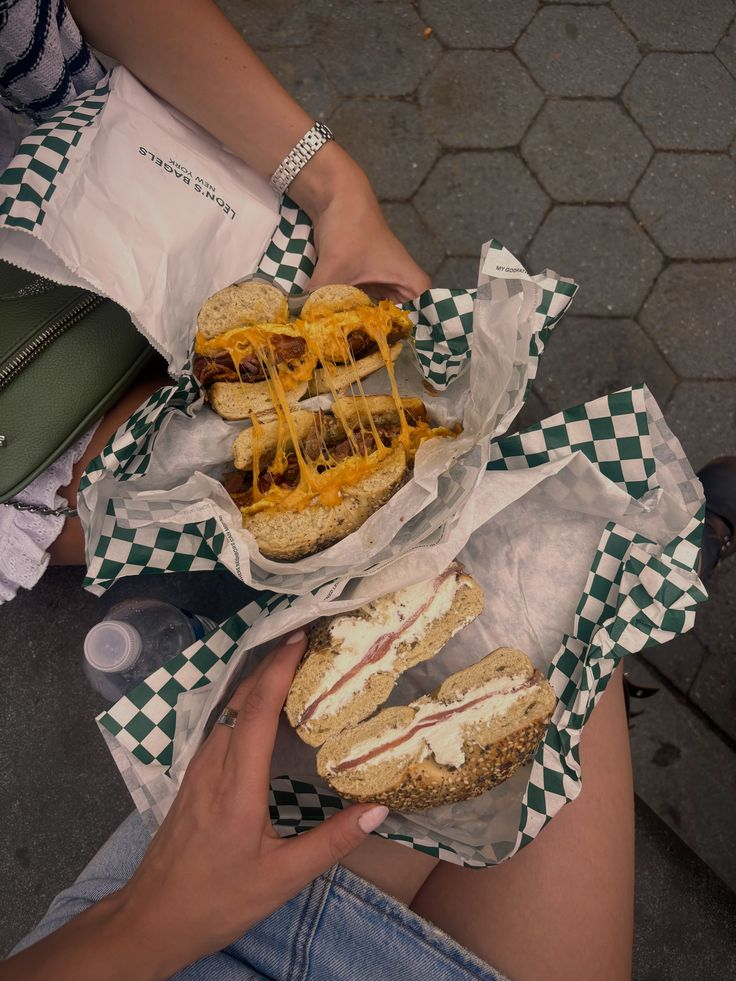
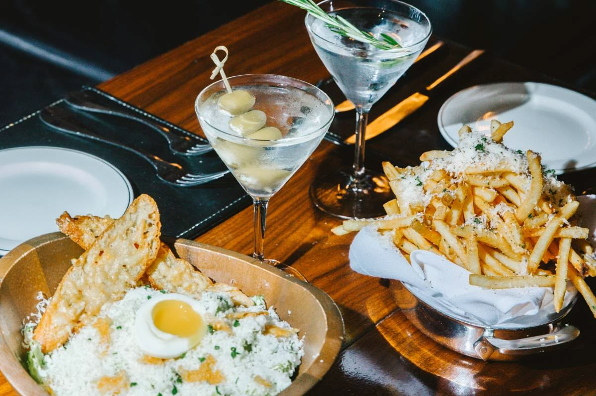
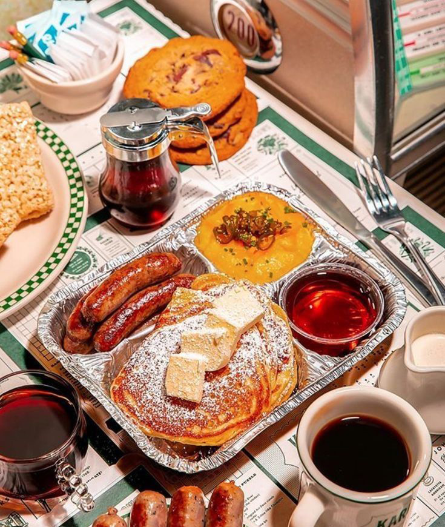
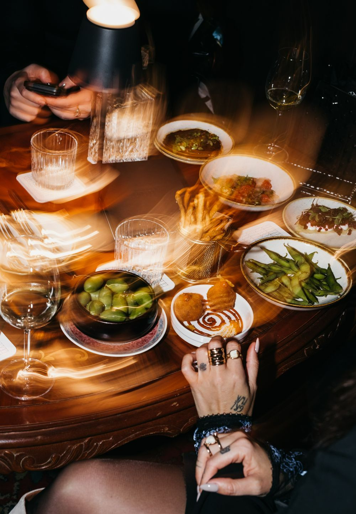
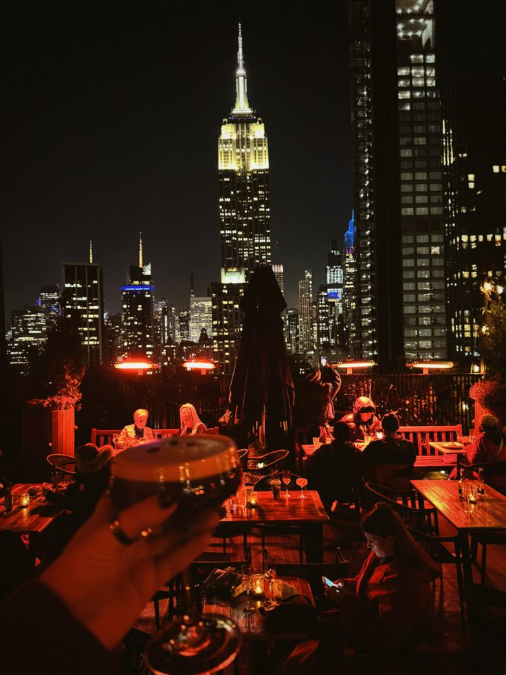
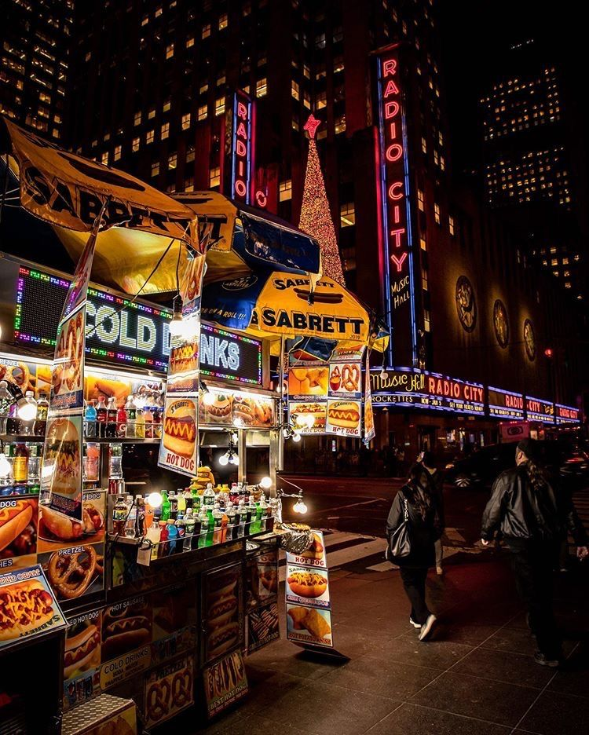

NYC BAGELS
Un clásico neoyorquino para empezar el día.
Nueva York es una ciudad de sabores infinitos. Desde la comida callejera y los cafés más emblemáticos hasta restaurantes y bares que cobran vida por la noche. Cada rincón tiene algo nuevo para descubrir.


Un clásico neoyorquino para empezar el día.

Mañanas tranquilas, buen café y algo rico para disfrutar.

Una porción de Nueva York en cada bocado.

Bares con personalidad, cócteles de autor y experiencias únicas para disfrutar la noche.

Terrazas con vistas increíbles al skyline de Nueva York, ideales para disfrutar un trago.

Desde clásicos callejeros hasta pequeños locales donde comer algo después de medianoche.
Todo lo que necesitás saber antes de salir a comer por Nueva York.
En Nueva York los horarios varían según el local. Muchos cafés abren temprano, mientras que algunos restaurantes y bares funcionan hasta la madrugada. Revisá los horarios antes de ir.
En los restaurantes con servicio de mesa es habitual dejar entre un 18 % y un 20 % de propina. Revisá la cuenta para comprobar si el servicio ya está incluido.
Desde food trucks y delis hasta diners, mercados gastronómicos y restaurantes. La ciudad ofrece opciones para todos los gustos y presupuestos.
Reservá con anticipación en los lugares populares, explorá locales fuera de las zonas turísticas y aprovechá para probar comidas de diferentes culturas.